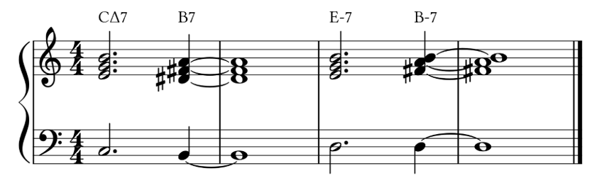

The personal blog of @megakite.
June 7, 2018.
最近常在一些欧美流行乐和电子舞曲里听到这种进行，觉得挺有意思，就想作些分析；正巧最近也想建一个博客，那么就拿这篇文章当作测试好了。
首先是开头的 CΔ7→B7，若针对最单纯之 Modal Interchange 的可能性进行思考，无法得出较合理的结论，于是此处暂时不作解释，继续往下看。
观察后面，会发现 B→E 是一个五度关系，而 B7 又是一个属七和弦，由此可以推出 B7 在这里是 E-7 的副属和弦，构成 V7→I-7 的强进行。
然后是 E-7→B-7，它们因转位而拥有相同的低音和高音，从而使四/五度关系比较模糊——可以解释为小调 I→V 或 IV→I。根据听感和前面副属和弦的功能，这里取前者。
这时再将 B-7 与 CΔ7 连接起来，不难发现就是小调的 V→VI。
综上所述，此例为小调的 VIΔ7→V7→I-7→V-7 进行。
kite@theliquid.group
megakite214g@gmail.com